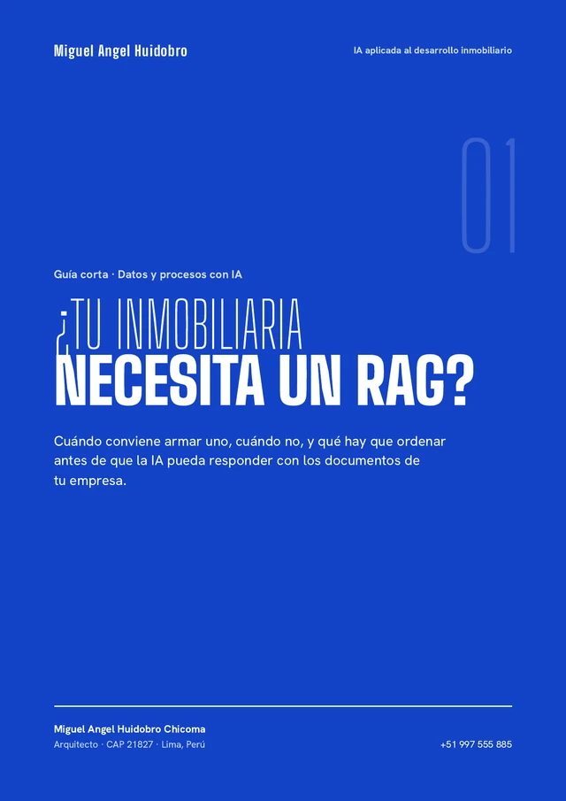

Guía gratuita · IA aplicada al desarrollo inmobiliario
¿Tu inmobiliaria necesita un RAG?
Una IA que no tiene tus documentos responde de memoria, y aunque se los des, si lo que preguntas no está ahí, te arma una respuesta igual de segura. Esta guía explica cuándo conviene armar un RAG, cuándo no, y qué hay que ordenar antes de que la IA pueda responder con los documentos de tu empresa.

Qué trae
- Qué es un RAG, sin tecnicismos, y por qué una IA que no tiene tus documentos responde de memoria.
- El límite de lo que la IA puede leer en cada pregunta, y cuándo ese límite obliga a armar un RAG.
- Una tabla para saber qué información de una inmobiliaria va a un RAG y cuál no: normativa, fichas de proyecto, protocolos, plantillas, precios.
- Lo que hay que ordenar antes, y tres preguntas para saber dónde está tu empresa.
Te la enviamos
Si después de leerla tienes la duda de si tu inmobiliaria necesita ordenar sus documentos, armar un RAG o ninguna de las dos, escríbeme y lo revisamos con tu caso.